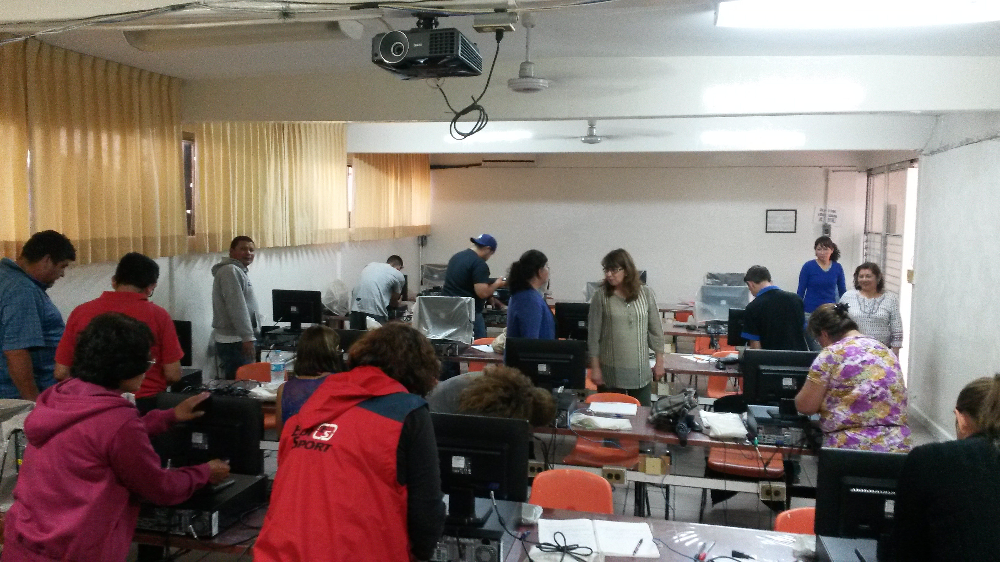

"Informática"
- Windows e internet
- Elaboración de Textos
- Elaboración de Presentaciones Electrónicas
- Elaboración de hojas de cálculo
- Operación de Base de Datos
Perfil del Egresado
- Identificar y operar el hardware y software de un equipo de cómputo usando en oficina, empleando el sistema operativo y el manejo adecuado del uso
de internet, así como crear, diseñar y dar formato a un documento mediante el procesador de textos utilizando presentaciones en Power Point. También
conocerá el manejo de la hoja de cálculo en Excel, mediante operaciones automatizadas y conocer, identificar, aplicar y crear una Base de Datos determinadas
para la aplicación Informática, con medidas de seguridad e higiene para personal y el equipo.
